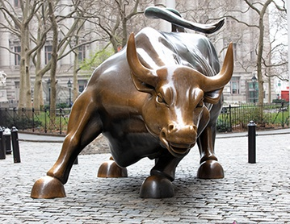

Although the exact causes of the financial crisis are a matter of dispute among economists, there is general agreement regarding the factors that played a role (experts disagree about their relative importance).
First, the Federal Reserve (Fed), the central bank of the United States, having anticipated a mild recession that began in 2001, reduced the federal funds rate (the interest rate that banks charge each other for overnight loans of federal funds—i.e., balances held at a Federal Reserve bank) 11 times between May 2000 and December 2001, from 6.5 percent to 1.75 percent. That significant decrease enabled banks to extend consumer credit at a lower prime rate (the interest rate that banks charge to their “prime,” or low-risk, customers, generally three percentage points above the federal funds rate) and encouraged them to lend even to “subprime,” or high-risk, customers, though at higher interest rates (see subprime lending). Consumers took advantage of the cheap credit to purchase durable goods such as appliances, automobiles, and especially houses. The result was the creation in the late 1990s of a “housing bubble” (a rapid increase in home prices to levels well beyond their fundamental, or intrinsic, value, driven by excessive speculation).
Second, owing to changes in banking laws beginning in the 1980s, banks were able to offer to subprime customers mortgage loans that were structured with balloon payments (unusually large payments that are due at or near the end of a loan period) or adjustable interest rates (rates that remain fixed at relatively low levels for an initial period and float, generally with the federal funds rate, thereafter). As long as home prices continued to increase, subprime borrowers could protect themselves against high mortgage payments by refinancing, borrowing against the increased value of their homes, or selling their homes at a profit and paying off their mortgages. In the case of default, banks could repossess the property and sell it for more than the amount of the original loan. Subprime lending thus represented a lucrative investment for many banks. Accordingly, many banks aggressively marketed subprime loans to customers with poor credit or few assets, knowing that those borrowers could not afford to repay the loans and often misleading them about the risks involved. As a result, the share of subprime mortgages among all home loans increased from about 2.5 percent to nearly 15 percent per year from the late 1990s to 2004–07.
Third, contributing to the growth of subprime lending was the widespread practice of securitization , whereby banks bundled together hundreds or even thousands of subprime mortgages and other, less-risky forms of consumer debt and sold them (or pieces of them) in capital markets as securities (bonds) to other banks and investors, including hedge funds and pension funds. Bonds consisting primarily of mortgages became known as mortgage-backed securities, or MBSs, which entitled their purchasers to a share of the interest and principal payments on the underlying loans. Selling subprime mortgages as MBSs was considered a good way for banks to increase their liquidity and reduce their exposure to risky loans, while purchasing MBSs was viewed as a good way for banks and investors to diversify their portfolios and earn money. As home prices continued their meteoric rise through the early 2000s, MBSs became widely popular, and their prices in capital markets increased accordingly.
Fourth, in 1999 the Depression-era Glass-Steagall Act (1933) was partially repealed, allowing banks, securities firms, and insurance companies to enter each other’s markets and to merge, resulting in the formation of banks that were “too big to fail” (i.e., so big that their failure would threaten to undermine the entire financial system). In addition, in 2004 the Securities and Exchange Commission (SEC) weakened the net-capital requirement (the ratio of capital, or assets, to debt, or liabilities, that banks are required to maintain as a safeguard against insolvency), which encouraged banks to invest even more money into MBSs. Although the SEC’s decision resulted in enormous profits for banks, it also exposed their portfolios to significant risk, because the asset value of MBSs was implicitly premised on the continuation of the housing bubble.
Fifth, and finally, the long period of global economic stability and growth that immediately preceded the crisis, beginning in the mid- to late 1980s and since known as the “Great Moderation,” had convinced many U.S. banking executives, government officials, and economists that extreme economic volatility was a thing of the past. That confident attitude—together with an ideological climate emphasizing deregulation and the ability of financial firms to police themselves—led almost all of them to ignore or discount clear signs of an impending crisis and, in the case of bankers, to continue reckless lending, borrowing, and securitization practices.


THESE INDICATORS ARE TELLING US A MARKET CRASH IS NEAR (PAGE 2)
HOMEPAGE